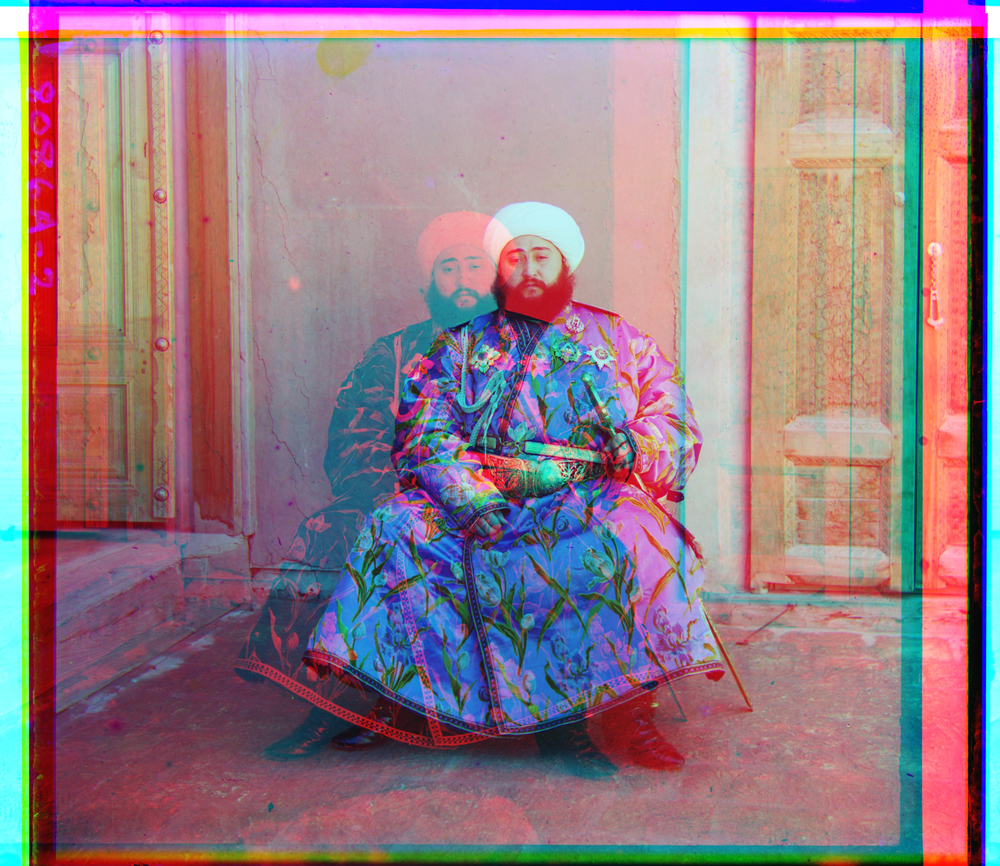
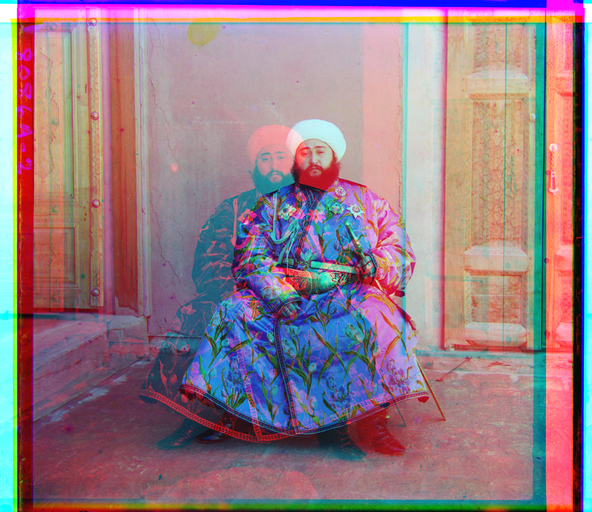
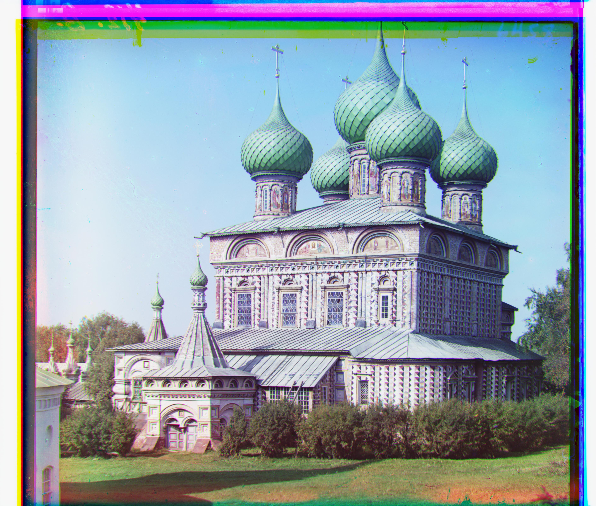
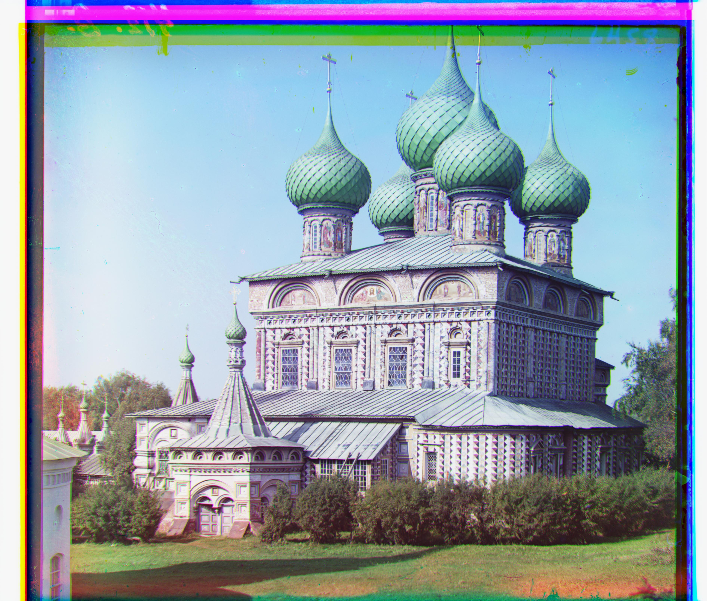
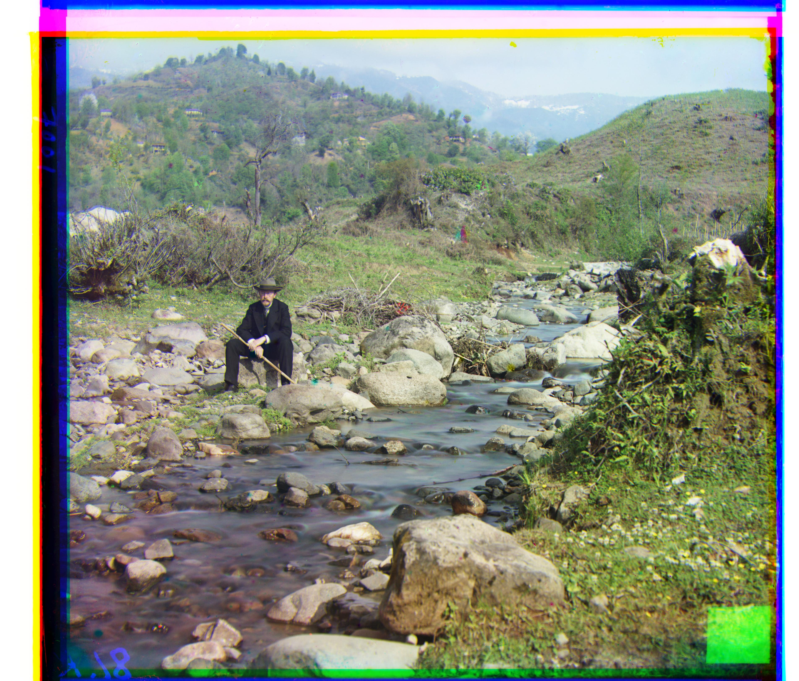
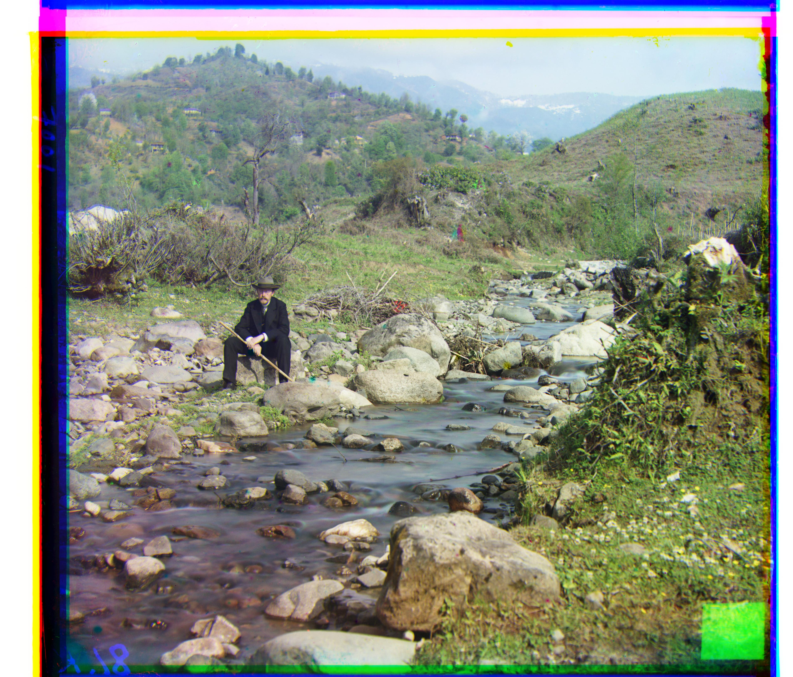
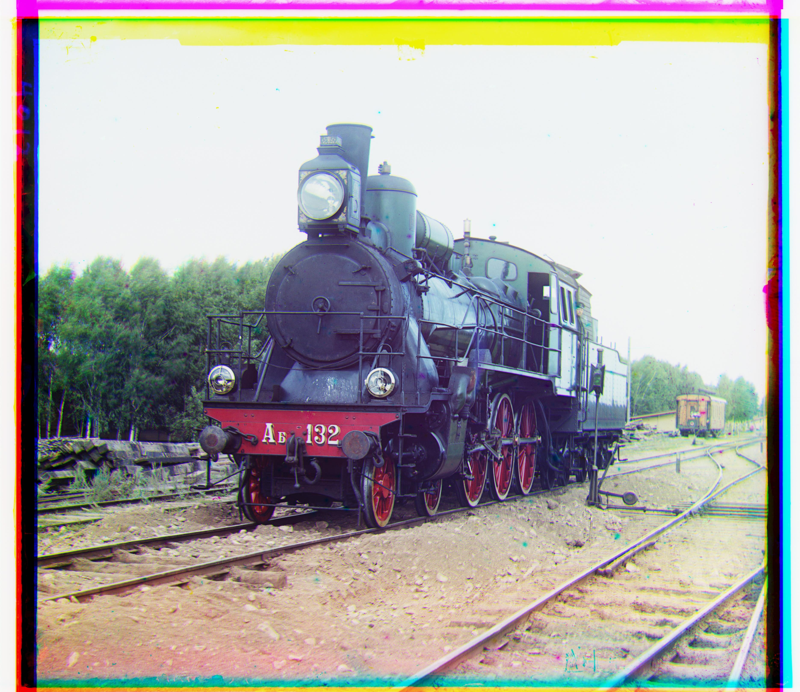
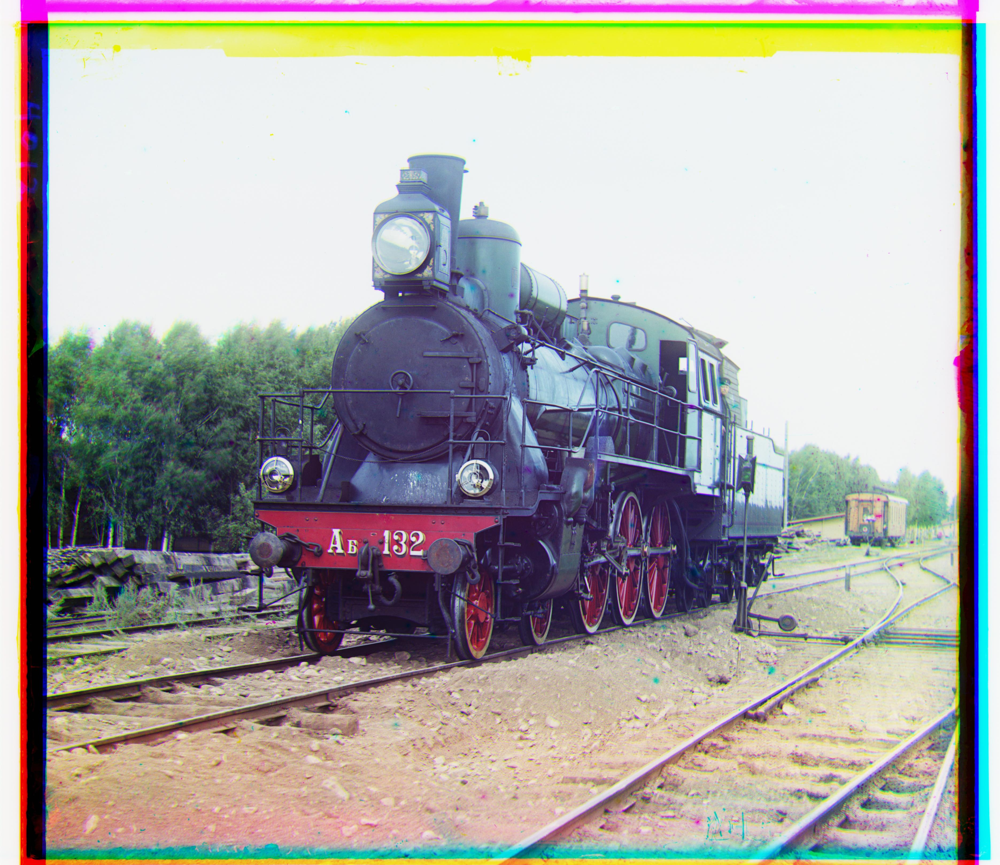

The following webpage holds the results of my colorization algorithm on images from the Russian empire. Here is a brief approach on how I did it. I first extracted the images and aligned them using an alignment algorithm. I had two implementations of my alignment algorithm, the first one was a single scale version which simply brute forced a 15 by 15 grid of displacements. The second one was a pyramid scale alignment, which would compress the image into smaller and smaller sizes and find the best displacement, and then use that to estimate the displacement for the bigger sizes. After aligning, I stacked the images ontop of each other to get the final result.

 



 

 


 
